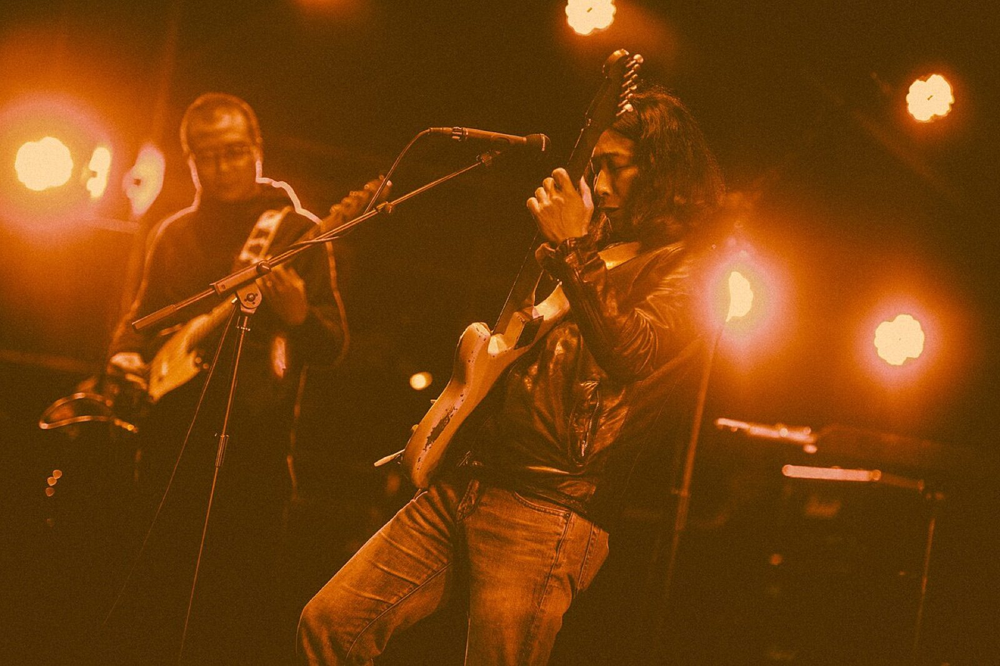

The Length of a Song
一首歌曲，一支乐队
每一期介绍一支乐队
Issues · 已出刊

#01 · 日本 · 东京
はっぴいえんどHappy End
用日语唱摇滚的那场争论，是他们终结的。
1969–1972《風をあつめて》4:02

#02 · 中国香港
Beyond超越
「香港只有娱乐圈，没有乐坛」——于是他们把原创乐队唱成了华语共同语言。
1983–2005《海闊天空》5:17

#03 · 中国台湾 · 高雄美浓
生祥乐队SHENG-XIANG & BAND
从反水库运动里长出来的客语乐队，把一支麦克风递给了农民和工人。
1994–今〈夜行巴士〉6:05

#04 · 韩国 · 首尔
野菊花들국화
队名来自键盘手嚼的一块口香糖；第一张专辑上不了电视，靠电台、现场和磁带卖了八十万张。
1983–1989〈那就是我的世界〉5:30

#05 · 中国内地 · 石家庄
万能青年旅店Omnipotent Youth Society
十四年磨出第一张专辑，专辑的最后一首歌，成了华北一座工业城市的「市歌」。
1996–今《杀死那个石家庄人》5:44

#06 · 泰国 · 曼谷
Bodyslamบอดี้สแลม
从方言里的「小孩子」到国民乐队；主唱后来用五十五天跑穿整个国家，为公立医院募了十三亿泰铢。
1996–今〈ขอบฟ้า〉4:16

#07 · 蒙古 · 乌兰巴托
The HuХү
两把马头琴、一把托布秀尔、四个人的呼麦——不用电吉他的金属乐队；一首唱狼的歌，成了第一支登顶公告牌的蒙古团体。
2016–今〈Wolf Totem〉5:38

#08 · 朝鲜 · 平壤
普天堡电子乐团보천보전자악단
团名取自 1937 年的一场抗日袭击；朝鲜第一支电子流行乐团，唱上班、结婚、回家。那首最不像口号歌的欢迎曲，2023 年之后被从舞台上拿掉了。
1985–今〈반갑습니다〉3:27

#09 · 中国澳门
Soler太陽系
澳门出生、意大利出道的一对双胞胎。父亲留下的壁画还砌在澳门旧酒店的墙上；他们把粤语摇滚唱进红馆，也在 2012 年被法庭颁下破产令。
2005–今〈失魂〉3:11
每页所有事实均来自公开来源并逐条核对，未找到可靠来源的内容一律不写入。
所引图片版权归各自权利人，均在页面末尾注明出处；站点为非商用个人阅读用途的资料整理。
页面内的 AI 生成内容（若有）均单独标注，不用于冒充任何历史照片。
正片为无声版资料短片——请自备音源，与页面同步播放。
所引图片版权归各自权利人，均在页面末尾注明出处；站点为非商用个人阅读用途的资料整理。
页面内的 AI 生成内容（若有）均单独标注，不用于冒充任何历史照片。
正片为无声版资料短片——请自备音源，与页面同步播放。